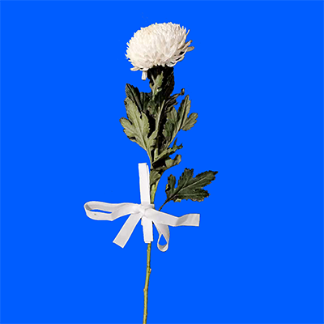

Works
Back

More
Back
UX: Redesign Review Platforms
Second Person
Photography collections
Silly Drum – interactive installation made with PD & Arduino
Fashion Show – an homage to Charlotte Cory’s photography You Animal, You.